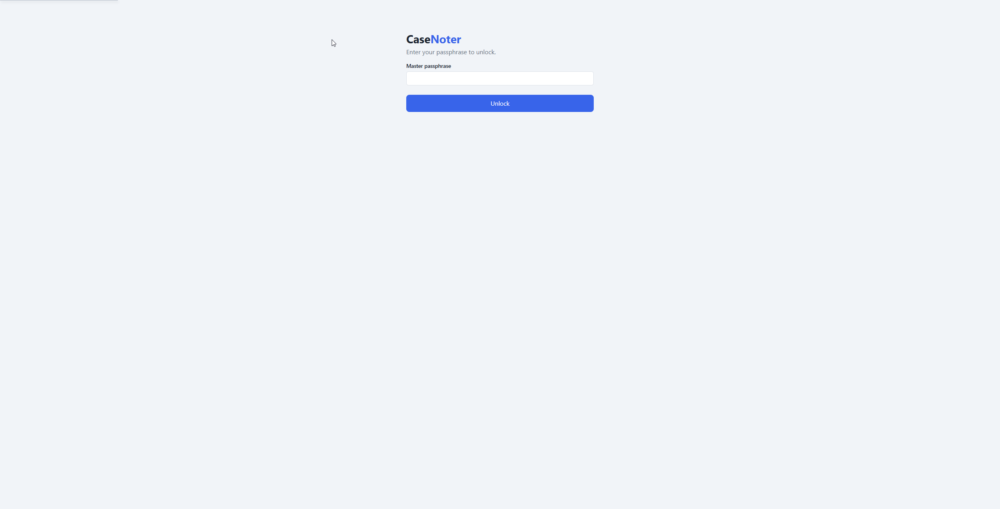
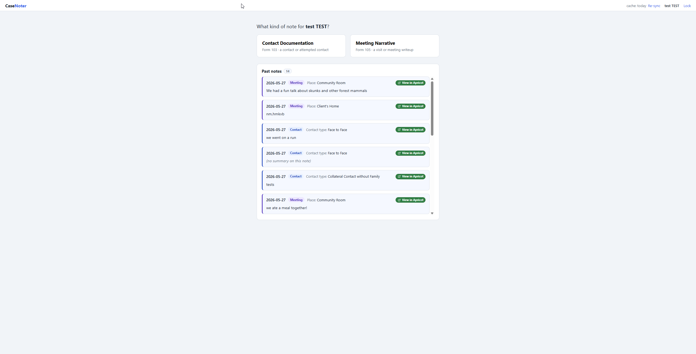
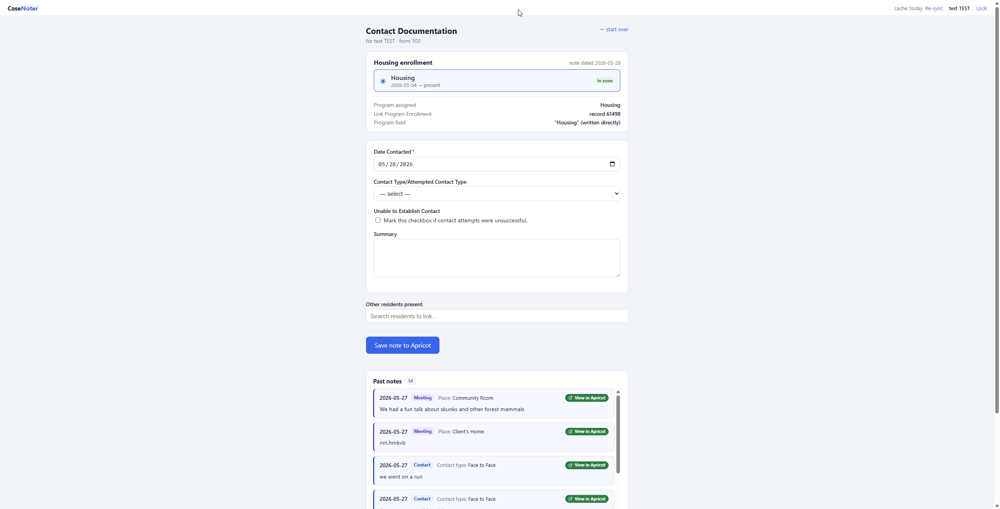
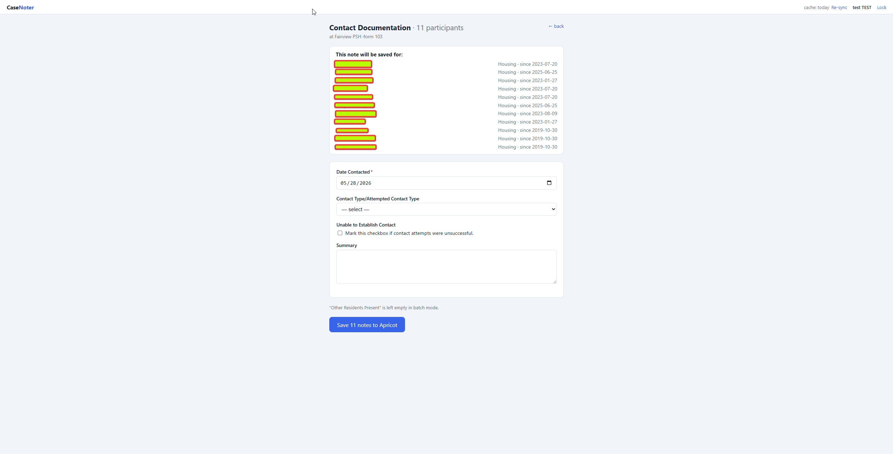

Getting Started with CaseNoter
Write one note for a whole site — all at once
The same activity, group meeting, or check-in often needs to be documented for everyone at a site. CaseNoter's batch mode lets you write the note once and save it to every resident enrolled there — instead of opening each person and retyping the same thing.
See Write notes for a whole site below.
What you receive
The download is a zip file containing three items. Put them all in one folder you won't lose — C:\CaseNoter\ is a fine choice.
- casenoter-helper.exe — the background helper that bridges the app to Apricot. You only receive this once.
- casenoter.html — the app itself. When the app is updated, a new copy is emailed to you and you save it over the old one.
- STAFF_README.txt — plain-text quick-start instructions (this guide is the friendlier version).
First-time setup
You only do this once. After it's done, starting CaseNoter each day takes just a few seconds.
1 Create a folder and run the helper
Put both casenoter-helper.exe and casenoter.html side by side in a folder you'll remember. Then double-click casenoter-helper.exe.
A small black window will open and stay open. That's the background helper doing its job — you don't need to type anything in it. Just leave it open while you use CaseNoter.
2 Your browser opens automatically
The helper opens CaseNoter in your default web browser. If it doesn't open on its own, type http://127.0.0.1:8765 into your browser's address bar. (The app runs on your own computer, not on the internet.)
3 Choose a master passphrase
On the first-time setup screen, choose a master passphrase (at least 8 characters) and type it again to confirm. This passphrase encrypts everything CaseNoter stores on your computer.
The same screen also asks for your Apricot API credentials (Client ID and Client Secret). The next section shows exactly where to get those.

Getting your Apricot API credentials
CaseNoter needs a Client ID and Client Secret from Bonterra so it can talk to Apricot. You create these once in your Bonterra account portal.
A Open “Manage APIs”
On the setup screen there is a link, “Get your API credentials from Bonterra,” which opens account.bonterra.network/api-creds. Log in, then go to the Manage APIs tab and click Create credentials.

B Fill in the new credential
In the Create API credentials box, select the Apricot product, give it a name (for example, casenote), and choose your organization. Then click Create credentials.

C Copy the Client ID and Client Secret
Bonterra now shows your Client ID and Client Secret. Copy each one and paste it into the matching field on the CaseNoter setup screen.

D Finish setup & first cache build
With your passphrase and credentials entered, click Set up CaseNoter. The app then builds a local cache of participant enrollments. This takes about 30–60 seconds the first time — just wait while it loads. After this, startup is instant.

Daily use
Once setup is done, starting up takes seconds. From there you can write a note for one participant, or for a whole site at once (batch mode).
1 Unlock
Double-click casenoter-helper.exe (the black window opens), let your browser open CaseNoter, then type your passphrase and click Unlock.

Writing a note for one participant
The everyday flow when you're documenting a single person.
2 Find a participant & choose a note type
Search by name or HMIS number — only participants with a Housing enrollment will appear. Pick the participant, then choose the kind of note: Contact Documentation (a contact or attempted contact) or Meeting Narrative (a visit or meeting writeup).

3 Fill in the note and save
CaseNoter automatically matches the right Housing program enrollment to the note's date and highlights it — glance at it to confirm it's correct, especially if the participant has more than one enrollment. Fill in the fields (Date Contacted, Contact Type, Summary, and so on), add any Other Residents Present if applicable, then click Save note to Apricot.

Writing notes for a whole site at once
When the same contact or meeting applies to everyone at a site, you don't have to repeat yourself. Pick the site, choose who it applies to, write the note once, and CaseNoter saves a real, separate note to each resident’s own Apricot enrollment.
1 Switch to “Browse by site”
At the top of the screen, click the Browse by site tab (instead of Search by name). Pick a site from the list on the left — for example, Fairview PSH. CaseNoter shows everyone currently enrolled there, with a count like Fairview PSH · 23 enrolled.
2 Choose who the note is for
Check the residents you want to document. Each person shows their HMIS number and enrollment start date. To save time, use the bulk buttons:
- Select all — everyone currently enrolled at the site.
- Select all heads of household — only heads of household, handy when you want one note per family rather than per person.
- Clear — start the selection over.
A bar at the bottom shows how many you've picked — e.g. 11 participants selected. Click Write note to 11 → to continue.
3 Choose the note type
CaseNoter asks “What kind of note for these 11 participants at Fairview PSH?” Pick Contact Documentation or Meeting Narrative — the same two note types as single notes.
4 Write the note once
Under “This note will be saved for:” you'll see the full roster, each resident with their housing program and enrollment date. CaseNoter has already matched each person to their own open enrollment at that site — you don't pick enrollments one by one. Fill in the shared fields once (Date Contacted, Contact Type, Summary, and so on) and they apply to everyone.

5 Save to everyone
Click Save 11 notes to Apricot. CaseNoter creates a separate note for each resident — one real Apricot note per person, against their own enrollment — and shows a results list with a ✓ record number for each one that saved.
If any don't go through (say the internet blipped), you'll see a line like “10 saved to Apricot · 1 still queued (retry from the top bar).” The queued notes are safe on your computer; click the pending button in the top bar to retry once you're back online. When you're finished, click Done.
Good to know
A few things that make CaseNoter easier to live with.
“Pending” notes work offline
Notes are encrypted and saved on your computer first, then synced to Apricot. If the internet drops mid-save, your note is safe. The top bar shows a pending indicator; click sync now once you're back online. A note is only removed from your computer after Apricot confirms it saved.
Re-sync
The participant/enrollment cache refreshes itself every two weeks. If a brand-new enrollment isn't showing up, click Re-sync in the top bar to force a fresh pull (this takes 30–60 seconds).
Lock vs. close
Lock (in the app) locks the screen and asks for your passphrase again, but the helper keeps running. Closing the black window stops the helper entirely and the CaseNoter tab goes dead.
Updating the app
When you receive a new casenoter.html by email, save it into your CaseNoter folder, replacing the old one, and refresh your browser. The helper (the .exe) stays the same — you don't need a new one unless told otherwise.
Common problems
| Problem | Fix |
|---|---|
| Blue “Windows protected your PC” popup | Click “More info,” then “Run anyway.” |
| Browser doesn't open | Go to http://127.0.0.1:8765 manually. |
| “Helper not detected” warning on the page | Make sure the black helper window is still open. |
| Can't find a participant | Click Re-sync. If still missing, they likely have no Housing enrollment. |
| Forgot my passphrase | No recovery is possible — the data must be reset and first-time setup redone. Contact your administrator. |
| Note stuck as “pending” | Click sync now once your connection is back. |
| Enrollment doesn't match | Manually pick the right enrollment from the list. |